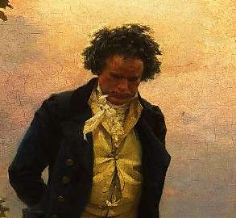

Борис Акунин
Мой календарь
Сегодня слушаем музыку Бетховена, жалеем его и пьем в его память хорошее вино.
Слушать бетховенскую музыку неплохо и во все другие дни, но жалеть его и выпивать в память о нем хорошее (что важно) вино следует именно 26 марта.
В этот день 1827 года великий Людвиг умер. Печалиться по этому поводу было бы странно. Все люди, жившие двести лет назад, умерли. Но есть одна деталь, от которой сжимается сердце.
Бетховен был нелюдимый, конфликтный (если не сказать склочный) человек, который в конце жизни еще и очень крепко выпивал. Алкогольные излишества, судя по диагнозу, и свели его в могилу.
И вот он лежит в своем холостяцком жилище, болеет. За окном весна, а он умирает, и музыка у глухого звучит только в голове.
Незадолго перед тем, как композитор потеряет сознание и уже не очнется, вдруг приносят подарок от его поклонников - ящик превосходного вина (пристрастия Людвига были всем известны). Но Бетховен уже слишком слаб, чтобы пить. «Как жалко, - шепчет он. - Слишком поздно».
Мне почему-то всегда было очень жалко умирающего Бетховена именно из-за этого. Будто судьбе показалось мало, что она так жестоко обходилась с ним всю жизнь - еще и устроила напоследок мелкую пакость в духе почтальона Печкина: «Я принес посылку для вашего мальчика, только я вам ее не отдам». Чехов по крайней мере перед смертью хоть шампанского выпил.
За Бетховена. Пусть там, в музыкантском раю, он наслаждается прекрасными звуками и пьет чудесные вина.